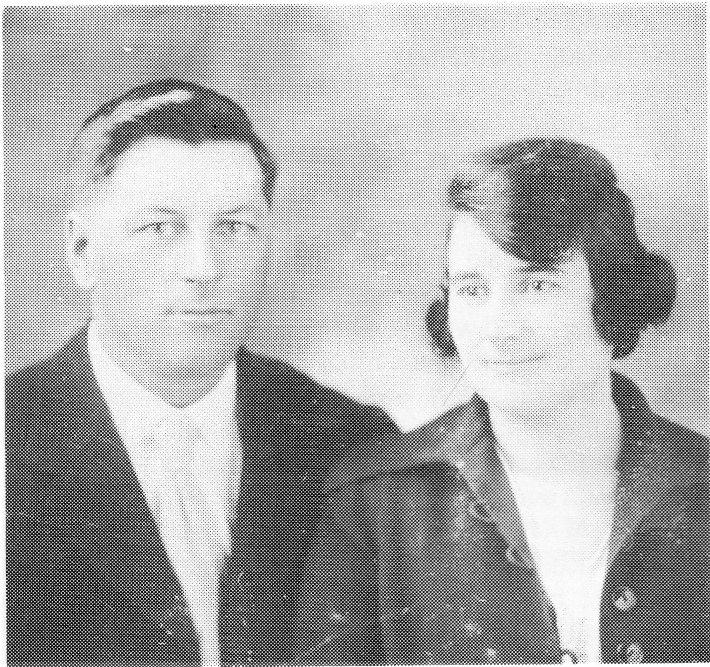

MATHILDA (L'HEUREUX) DEVLIN
THE LAST DAY ON THE FARM
She checked the thermometer of the old Enterprise wood stove. Bert had lit it sometime before. Now it was ready to bake the dream bars they would eat on the trip. She slid the baking pans in. Before she closed the oven door, she remembered a frosty February morning, or was it March? in 1936, or was it '37?

Bert had walked into the kitchen bundling his machinaw in his arms. Anger and grief were painted in his piercing eyes.
"Open the oven door, Tilly, I believe we've lost them all. This bloody country isn't fit for pigs, let alone human beings. When I went to the barn, the old sow had already littered and these poor little blue bastards were laying all around her, stiff as hell. I was damn near in tears when I threw them one by one, on the manure pile so the old sow wouldn't eat them along with the afterbirth. When the last one, the runt, hit the pile, it kicked, so there may be some hope". Mathilda fetched an old blanket and laid the seven stiff blue piglets out on this same oven door. She smiled now remembering the fun they had feeding each of them by bottle, after they had survived their bitter cold birth. She chuckled remembering the clicks of the pig's little hooves on the linoleum floor. They would come snorting into the bedroom responding to the sound of Bert's snoring. How Louise had cried, pleading with Bert to let her keep Teddy, the runt with the broken hip. Bert felt that the injured piglet should be destroyed, but finally succumbed to his daughter's plea.
Louise's "Teddy" became a real pet, sometimes knocking her over trying to jump into her arms. Several times he followed her to school. The days that the pigs went to market, Louise was heartbroken. Her heartbreak was minor compared to the sadness of today, when most of an accumulation of twenty-five years of struggle would fall under the auctioneer's hammer. Mathilda closed the oven door on the dream bars and went outside.
She was met by the dog.
"What's to become of you? Surely you'll miss us? At least your fate will be different from your predecessor's." She studied him a moment and reflected on a spring afternoon.
Fred had come home with a Robert's Golden Syrup pail, once used to pack the sandwiches for school. It had been lost for weeks.
"Oh, Fred, where did you find it? It's so dirty we'll never be able to use it for lunches again. I bet you lost it at lunch hour when you went out drowning gophers. Go wash it out and we'll use if for the milk for the calf." Lloyd was sent out to the barnyard with the bucket to feed the calf. He came back crying.
"The calf wouldn't drink, he just kept bunting the bottom of the pail until he dumped it all on the ground and the dog lapped it up." She remembered how, she had put fresh milk into the calf's regular pail and beat an egg into it thinking the calf was sick. Fred went out to feed it and came back happy."
"The calf drank all his milk, Ma! But on the way back from the barn, the dog was laying on his back with his feet in the air, sort of whimpering. I thought he wanted to play, so I rubbed him up and he seemed to like that but he followed me kind of stiff legged."
"Oh my faith!" Mathilda said, "The dog's been poisoned! Someone must have used this pail for gopher poison!" She mixed some mustard with milk, poured it into a bottle and gave it to Fred. "Try to force the dog to drink it, make him run around. Try to make him vomit."
Fred, Omer and Lloyd went out and were successful at getting most of the milk down the dog's throat. Then they ran the dog, one pulling, two pushing, but the poor beast got stiffer and stiffer. Finally, the dog collapsed limp, stone dead. That was a sad day, but not nearly as sad as this day.
"What's to become of us? If we don't die of starvation, with war rations, I'll likely die of homesickness. Oh God, give me strength!"
She looked at her little garden. This was June the 2nd, 1944; the vegetables were weeded and growing. "At least the new owners will be able to eat," she thought to herself. Her heart sank as she looked at the household belongings they had placed in the yard to sell. Her sewing machine, churn, most of the pots and pans, the canner, the jars, the gramophone. "Who will ever bid on these old things? I wonder if anyone will even come to the auction. Oh, God preserve us! All our belongings, all our past, all our memories, at auction!"
Her tear filled eyes fell on the old 4 gallon crock in which Bert punched down the bread dough. He'd leave it to rise on a chair beside the old wood stove. A half-smile pulled at her lips as she recalled the one time the dough had risen so high it fell right out of the crock onto the floor. Bert had quietly picked up the big batch of stiff dough and popped it back into the crock. It was then that he started laughing and called everyone to see the incredible sight. All joined in the laughter, for there, upside down on top of the mound of dough, were Bert's best pair of black size nine boots!
"OH MA FOI! Oh my faith, my dream bars!" she whispered as she ran back to the house to take them from the oven. They smelled so good. " At least we'll eat well on the train to Chilliwack. Chilliwack, what an odd name!"
The people had begun to arrive and Mathilda began to panic. "Is everything as it should be?" She looked out to see all the farm machinery lined up. Those animals to be auctioned were tethered. "Poor beasts will have to become accustomed to new masters." More people were arriving. Marie Louise and some of Mathilda's other sisters came with embraces, consolations and encouragement. The auctioneer's voice brought a hush over the group. At the first item up for sale, Mathilda brought her handerkerchief to her face to cover the tears. Bert gave her a look which she recognized immediately. She walked away knowing she could not keep her composure and that tears would dampen the bidders enthusiasm. She walked toward the well breathing in the smell of mint that grew nearby. Memories flashed through her mind. She looked at the well thinking how fortunate she had been to lasso a pig that had fallen in. All the children had helped pull him out.
In silence she walked past the poplars where the pigs were bled, drawn and quartered. She walked past the barn remembering how Omer had worked so hard to save the calf with diarrhea.
She looked in the grainery and saw the dried cod fish mailed to the wall. She chuckled recalling the day Bert had nailed up the cod fish, saying, "That's the last of those dry sons a bitches we'll ever have to eat." The depression had been hard and embarrassing, but pride had to be swallowed to survive. "What does the future hold for us now? Do we walk into the valley of death or will life be better? Blessed St. Joseph help us!"
The auctioneer had moved away from the household items and was now selling off the machinery. Some ladies joined Mathilda, reminiscing and consoling. Fred came running, "Mama, we got four hundred and twenty-five dollars for the Model T!" "Isn't that good, Fred," Mathilda replied, "and to think I was mad at Bert for paying one hundred and twenty-five for it!" She thought of the day everyone was in the old car on the way to town, when seemingly out of nowhere, a wheel had rolled ahead of the car. And what a surprise everyone had when it was discovered it came off of their Model T.
The auction was very good, bringing in far more than anyone had aniticipated. Mathilda"s saddest day reached its end in a very quiet drive into town with everyone retaining their own memories.
At this writing, Mathilda still resides in Chilliwack. She has outlived all her brothers and sisters. Her beloved Bert who's heart was never in farming, became a painting contractor on their arrival in the Fraser Valley. He died of a heart attack in 1957. At 93, Mathilda has proven her L'Heureux strength and longevity. She is loved and held in high esteem by her seven children and her many grandchildren.
Lloyd Devlin
Mathilda L'Heureux Devlin
| NAME | BORN | MARRIED | SPOUSE | BOY | GIRL | DIED |
|---|---|---|---|---|---|---|
| Mathilda | Sept. 3, 1893 | Dec. 7, 1921 | Peter Devlin | 4 | 4 | |
| Peter | , 1957 | |||||
| MATHILDA'S FAMILY | ||||||
| Leonard | Nov. 2, 1922 | July 14, 1944 | Agnes Middlemiss | 2 | 0 | |
| Elvia | Feb. 24, 1924 | , 1950 | Gerald 'Bud' Conroy | 2 | 2 | |
| Louise | May 26, 1925 | , 1948 | Robert Percher | 1 | 6 | |
| Isabel | May 25, 1926 | Aug. , 1926 | ||||
| Ethel (Sister) | Sept. 2, 1927 | Professed Sister of the Child Jesus | ||||
| Frederick | Sept. 7, 1929 | Sept. 16, 1950 | Kathleen Kennedy | 2 | 1 | |
| Omer | Nov. 11, 1930 | Sept. 5, 1964 | Carmen Johnstone | 2 | 1 | |
| Lloyd | Mar. 15, 1932 | Oct. 27, 1957 | Ann Atamanchuk | 3 | 3 | |
| Mathilda's Grandchildren | ||||||
| LEONARD'S FAMILY | ||||||
| Allan | Sept. 7, 1945 | May 17, 1969 | Yolande Morin | 0 | 2 | |
| Wayne | Sept. 7, 1945 | |||||
| Mathilda's Great Grandchildren | ||||||
| Leonard's Grandchildren | ||||||
| ALLAN'S FAMILY | ||||||
| Courtenay | Jan. 12, 1982 | |||||
| Meghan | Jan. 31, 1984 | |||||
| Mathilda's Grandchildren | ||||||
| ELVIA'S FAMILY | ||||||
| Bernadette | Apr. 20, 1950 | , 1971 | Ken Dickie | 0 | 2 | |
| Kevin | Sept. 28, 1951 | 1 | ||||
| Marguerite | Feb. 4, 1954 | , 1978 | Mike Hall | 2 | 0 | |
| Martin | Apr. 5, 1956 | , 1979 | Adele | |||
| Mathilda's Great Grandchildren | ||||||
| Elvia's Grandchildren | ||||||
| BERNADETTE'S FAMILY | ||||||
| Kimberly | May 15, 1971 | |||||
| Charleen | Feb. 12, 1973 | |||||
| KEVIN'S FAMILY | ||||||
| Erik | Aug. 4, 1977 | |||||
| MARGUERITE'S FAMILY | ||||||
| Graham | June 12, 1979 | |||||
| Sean | Dec. 14, 1982 | |||||
| Mathilda's Grandchildren | ||||||
| LOUISE'S FAMILY | ||||||
| Yvonne | June 16, 1949 | , 1972 | Lee Duncan | 1 | 1 | |
| Remarried | Lorn Broadbent | |||||
| Simone | Nov. 3, 1950 | , 1976 | Tom Russel | |||
| Jeanette | May 31, 1953 | Tony Zagwyn | 0 | 1 | ||
| Suzanne | Apr. 2, 1955 | , 1979 | Bob Reisig | 1 | 1 | |
| Felice | July 7, 1957 | , 1981 | Murray Clements | 0 | 1 | |
| Corinne | May 23, 1961 | 1 | ||||
| Camille | July 23, 1967 | |||||
| Mathilda's Great Grandchildren | ||||||
| Louise's Grandchildren | ||||||
| YVONNE'S FAMILY | ||||||
| Justin | Oct. 11, 1973 | |||||
| Lisa | Aug. 30, 1974 | |||||
| JEANNETTE'S FAMILY | ||||||
| Stephanie | Aug. 27, 1977 | |||||
| SUZANNE'S FAMILY | ||||||
| Devon | Jan. 22, 1982 | |||||
| Carly | July 11, 1983 | |||||
| FELICE'S FAMILY | ||||||
| Teresa | May 8, 1984 | |||||
| CORINNE'S FAMILY | ||||||
| Danielle | July 17, 1981 | |||||
| Mathilda's Grandchildren | ||||||
| FREDERICK'S FAMILY | ||||||
| John | Aug. 9, 1951 | Jan. 28, 1983 | Nonita Yap | 1 | 0 | |
| Kim | Aug. 13, 1957 | May 14, 1977 | Michael Taylor | 1 | 0 | |
| Andrew | Aug. 22, 1963 | Dec. 23, 1982 | Patricia Devlin | |||
| Mathilda's Great Grandchildren | ||||||
| Frederick's Grandchildren | ||||||
| JOHN'S FAMILY | ||||||
| Sean | July 8, 1983 | |||||
| KIM'S FAMILY | ||||||
| Aaron | Mar. 8, 1983 | |||||
| Mathilda's Grandchildren | ||||||
| OMER'S FAMILY | ||||||
| Darcy | Feb. 4, 1965 | Aug. 24, 1985 | James Potter | |||
| Brent | Aug. 16, 1967 | |||||
| Troy | Dec. 11, 1968 | |||||
| Mathilda's Grandchildren | ||||||
| LLOYD'S FAMILY | ||||||
| Mark | Aug. 1, 1957 | |||||
| Deborah | July 12, 1958 | May 2, 1981 | Clayton Chu | 2 | 0 | |
| Patricia | July 11, 1959 | Dec. 23, 1982 | Andrew Devlin | |||
| David | July 20, 1961 | |||||
| Andrew | Oct. 9, 1965 | |||||
| Teresa | Oct. 10, 1967 | |||||
| Mathilda's Great Grandchildren | ||||||
| Lloyd's Grandchildren | ||||||
| DEBBIE'S FAMILY | ||||||
| Jason | Aug. 5, 1981 | |||||
| Anthony | Aug. 17, 1984 | |||||
| TOTAL DESCENDANTS | 75 |
| LIVING | 73 |
| DECEASED | 2 |